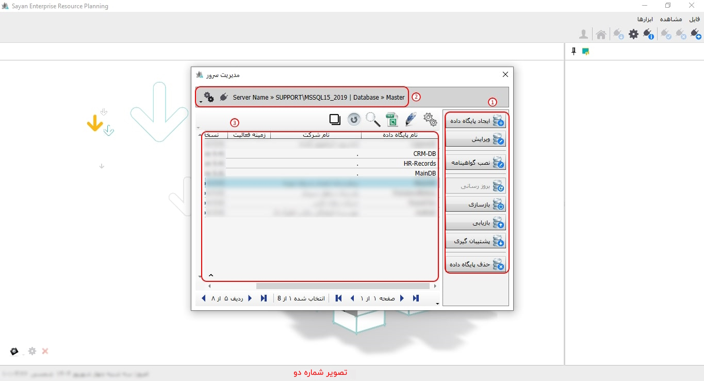

امکان مدیریت سرور از طرق مختلفی در دسترس می باشد هنگامی که نرم افزار سایان را اجرا می کنید مطابق تصویر زیر صفحه ای با دو تب مشاهده می کنید که تب دوم آن تنظیمات و ارتباط با سرور است :

برای ادامه مطلب به تصویر شماره دو مراجعه نمایید.

-کلمه عبور(کادر شماره یک):
برای ادامه مطلب به تصویر شماره سه مراجعه نمایید.
-ایجاد پایگاه داده(کادر شماره یک):
-کادر شماره دو:
برای ادامه مطلب به تصویر شماره چهار مراجعه نمایید.